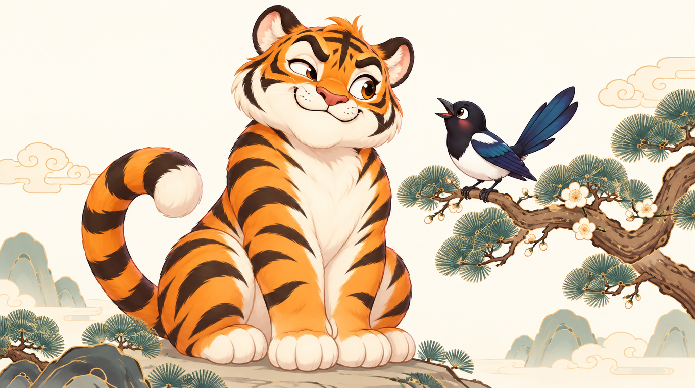

세계의 장난꾸러기 이야기
트릭스터와 창의성
트릭스터는 상황을 뒤집고 새로운 것을 만들어 내는 이야기 속 주인공이에요. 때로는 자기 꾀에 넘어가기도 하죠.
세계의 트릭스터 이야기를 읽고, 나만의 이야기를 만들어 보세요.

세계의 트릭스터를 만나 보세요
카드를 누르면 그 나라의 트릭스터 이야기를 읽을 수 있어요.


나도 트릭스터 이야기를 만들 수 있어요
6단계 공식을 따라 한 칸씩 채우면 짧은 동화가 완성돼요. 쓰던 글은 자동으로 저장돼요. 친구들의 동화 구경하기 →
- 주인공
- 문제
- 상대
- 뒤집기
- 뜻밖의 결과
- 새로 생긴 것
예시 이야기 「토끼와 호랑이」
| 주인공 | 문제 | 상대 | 뒤집기 | 뜻밖의 결과 | 새로 생긴 것 |
|---|---|---|---|---|---|
| 꾀 많은 토끼가 살았어요. | 배고픈 호랑이가 토끼를 잡아먹으려 했어요. | 호랑이는 힘이 세지만 욕심이 많았어요. | 토끼는 "꼬리를 강물에 담그고 있으면 물고기가 잔뜩 걸려요"라고 말했어요. | 밤새 강물이 얼어서 호랑이 꼬리가 꽁꽁 붙어 버렸어요. | 힘이 약해도 꾀로 이길 수 있다는 이야기가 생겼어요. |
뭘 쓸지 모르겠다면 재료를 뽑아 보세요. 비어 있는 칸에 자동으로 들어가요.
트릭스터?
상대?
배경?
나의 트릭스터 동화
생각해 볼까요?
- 내가 뒤집은 방법은 새로웠나요?
- 속은 쪽은 어떤 기분이었을까요?
- 이야기 때문에 무엇이 새로 생겼나요?
부모님과 선생님께
트릭스터 이야기는 정답이 하나로 정해지지 않은 애매한 상황에서, 주인공이 상황을 뒤집어 새로운 결과를 만들어 내는 이야기입니다. 아이들은 이 과정을 따라가며 익숙한 생각을 다르게 바라보는 창의적인 사고를 경험할 수 있습니다.
이야기를 함께 읽은 뒤 "트릭스터의 꾀는 옳았을까?", "속은 쪽은 어떤 마음이었을까?"처럼 정답이 없는 질문으로 이야기를 나누어 주세요. 아이가 쓴 동화도 함께 읽고 칭찬해 주시면 큰 힘이 됩니다.